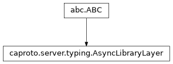

caproto.server.AsyncLibraryLayer¶

- class caproto.server.AsyncLibraryLayer[source]¶
Library compatibility layer.
To be subclassed/customized by async library layer for compatibility Then, a single IOC written within the high-level server framework can potentially use the same code base and still be run on either curio or trio, etc.
Methods
sleep(seconds)Sleep for
secondsseconds.Attributes
nameEventThreadsafeQueuelibrary